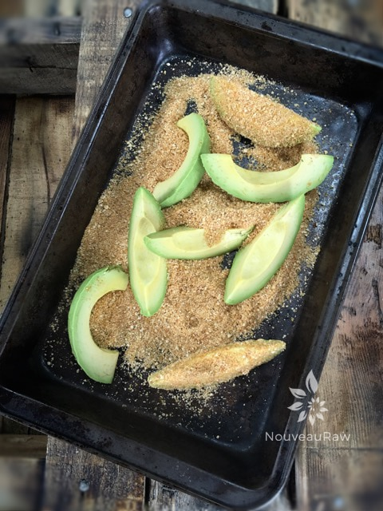
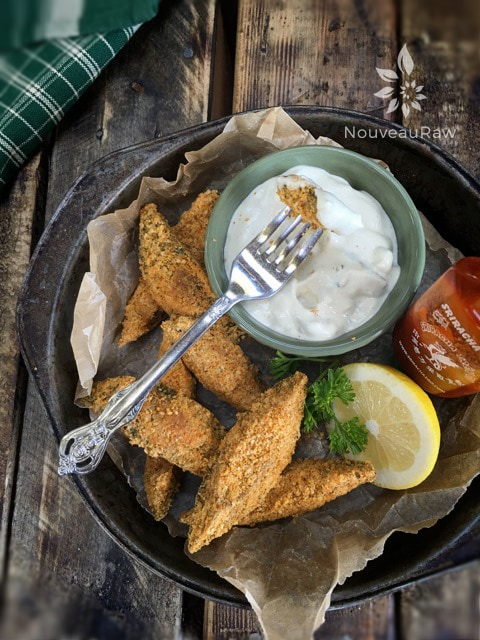

Smoked Paprika Avocado “Fries”

raw / vegan / gluten-free
So, a few nights ago I made these avocado “fries” with some leftover “breading” from my Raw Vegan Fish Sticks. After they had been in the dehydrator for about 5 hours, I pulled them out and put the tray on the island counter.
I hollered for Bob to come take a taste test. He walked up beside me and looked down at them and asked what they were. I explained what I did, he picked one up and took a bite.
“Hmm, not bad, they are ok.”….. He turned the corner of the island. “yea, not bad!”…. he turned the other corner of the island and said, “Hmm, those are actually pretty darn good.” He came back full circle to the tray, and in taking another one, he said, “DANG, those are delicious!” He circled that island like a vulture until he had eaten every single one of them! I think it is safe to say that he liked them. haha
These avocado “fries” are best served warm right out of the dehydrator. They won’t harden due to the avocado and fat content. They would be perfect to have as an appetizer for a dinner party or gathering. They are crunchy and spicy on the outside but creamy and rich on the inside. Bob compared the texture to a truffle filled with ganache.
Avocados are very good for you. They are the best fruit (yes, fruit) source of vitamin E, an essential vitamin that protects against many diseases and helps maintains overall health.
I recommend using ripe but semi-firm avocados for this. If they are too firm, they are not ripe. Unripe avocados are harder to digest and don’t taste as good. If they are too soft, you will have guacamole on your hands, which isn’t so bad if you want guacamole. :) When I shop for avocados I have a two-step process. I lightly give them a squeeze and then I pop the “bellybutton” off… you know that little nub where they were once attached to the tree? If it is a nice bright green under it, it should be a perfect avocado. If it is brown, put it down and move along. These are great dipped in my raw Tartar Sauce. And I can only imagine that the Touchdown Spicy Cheese would be heavenly as well!
- 1/2 cup raw cashews
- 1/4 cup ground flax seeds
- 1 tsp smoked paprika
- 1 tsp smoked Himalayan pink salt
- 1/2 tsp fresh ground black pepper
- 1 tsp nutritional yeast
- 4 large avocados
Preparation:
- To make the breading, grind the cashews in the food processor to a small crumb size. Don’t over-process, as this will start to release the oils and we don’t want that.
- Add the ground flax seeds, paprika, salt, pepper, and yeast. Pulse together and pour into a rectangular container for dredging.
- Cut the avocados in half and discard the seeds. Remove the skins then slice into 1/4″ slices.
- Gently coat the avocado slices with the “breading” and place them on the mesh sheet that comes with the dehydrator.
- Dry at 115 degrees for 2-4 hours or until it reaches the desired texture. These will not dry crispy due to the oil content in the avocado.
- Serve right away.
Culinary Explanations:
- Why do I start the dehydrator at 145 degrees (F)? Click (here) to learn the reason behind this.
- When working with fresh ingredients, it is important to taste test as you build a recipe. Learn why (here).
- Don’t own a dehydrator? Learn how to use your oven (here). I do however truly believe that it is a worthwhile investment. Click (here) to learn what I use.



© AmieSue.com